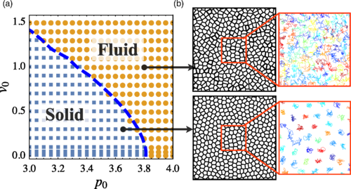
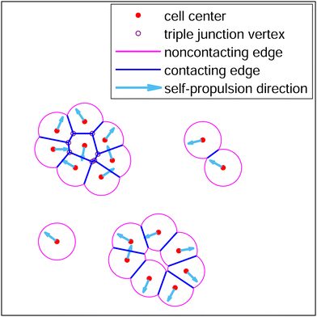
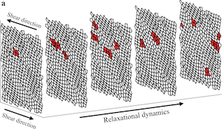

Interactive browser-based simulations accompanying our papers.

A browser-based simulation of a confluent 2D tissue modeled as self-propelled Voronoi cells. Sweep the target shape index p₀, motile speed v₀, and rotational noise Dᵣ across the rigidity transition, and watch cell shapes, polarities, and shape-index distributions respond in real time.
Launch demo →
Voronoi cells with a finite interaction radius ℓ: boundaries mix straight contact edges with cell–medium circular arcs. Tune the arc-tension Λ and self-propulsion to sweep between cohesive confluent tissue, motile detachment, and full fragmentation. Bridges confluent and non-confluent tissue physics.
Launch demo →
Voronoi tissue sheared quasistatically under Lees–Edwards boundaries: each strain increment is followed by FIRE energy minimisation. Watch the stress–strain trace develop linear elasticity, yielding, and the avalanche plateau; T1 topology flips flash red at their location.
Launch demo →